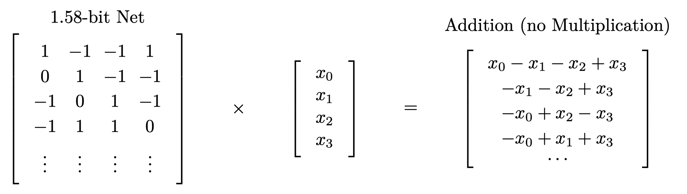

Method at a glance
- Encode textUse a Transformer encoder for the classification task.
- Quantize linear layersCompare binary weights with ternary {−1, 0, +1} weights and quantized activations.
- Train and inspectExamine the additional training work, memory requirements, and practical inference behavior.
Schematic summary of the project workflow.
The question
Low-bit networks promise to make large language models cheaper to run. This seminar project examined the mechanics behind that promise and investigated what happens when the approach is applied to a downstream text-classification model. My practical experiment trained BERT on the Toxic Comment Classification Challenge dataset.
Inside the quantized Transformer
BitLinear replaces ordinary linear transformations inside the Transformer. In the binary formulation, centered weights are mapped to −1 or +1; the ternary formulation adds a zero state. Activations are quantized to an 8-bit integer range, and stored scaling factors restore the output magnitude after the low-precision computation. Normalization controls the input distribution.
Training retains full-precision master weights while using quantized values in the forward calculation. A straight-through estimator allows gradients to pass through the otherwise nondifferentiable quantization operation. This makes quantization-aware training fundamentally different from simply compressing a finished checkpoint.
What the implementation revealed
My report records an approximately twofold increase in training duration and a larger training-memory footprint. Quantization, dequantization, extra copies of weights, and scaling factors introduce work that is easy to overlook when looking only at the bit width.
The PyTorch setup used in the project did not provide the specialized 1-bit arithmetic needed to realize the proposed inference advantage, so the implementation did not demonstrate an inference-speed improvement. The main lesson was to distinguish a mathematical reduction in arithmetic precision from a realized system-level speedup. Published BitNet efficiency numbers describe the original papers, rather than measurements from this BERT experiment.
Project visuals


Related resources
Based on my 2024 seminar report and presentation, including the report’s separate discussion of my BERT experiment.